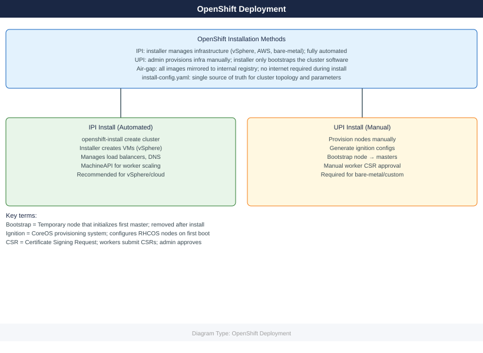

OpenShift — Deploy¶
IPI vs UPI vs agent-based installation methods, install-config.yaml structure for vSphere IPI, RHCOS bootstrap sequence, air-gap mirror setup with oc-mirror, DNS requirements, and post-install validation checklist.
*Applies to: OpenShift 4.x*

Before you begin¶
- Access: Admin credentials on all affected systems
- Environment: DNS, NTP, and network connectivity verified before starting
- Change management: change request approved; maintenance window scheduled
- Rollback: snapshot or backup taken immediately before deployment begins
- Time estimate: 30–90 minutes — do not start if less than 2 hours are available
IPI Install Sequence¶
DNS Requirements¶
Required DNS records must exist before running openshift-install. The installer validates DNS early and aborts if records are missing.
| Record | Type | Target | Port | Required By |
|---|---|---|---|---|
api.<cluster>.<base> |
A | Load balancer VIP | 6443 | All clients, workers |
api-int.<cluster>.<base> |
A | Load balancer VIP (internal) | 6443 | Nodes (internal) |
*.apps.<cluster>.<base> |
A (wildcard) | Ingress router VIP | 80/443 | All app routes |
etcd-0.<cluster>.<base> |
A | Master-0 IP | — | Bootstrap/etcd peer |
etcd-1.<cluster>.<base> |
A | Master-1 IP | — | Bootstrap/etcd peer |
etcd-2.<cluster>.<base> |
A | Master-2 IP | — | Bootstrap/etcd peer |
_etcd-server-ssl._tcp.<cluster>.<base> |
SRV | etcd-{0,1,2} | 2380 | etcd peer discovery |
# Validate DNS before install
nslookup api.ocp.example.com
nslookup test.apps.ocp.example.com
dig +short _etcd-server-ssl._tcp.ocp.example.com SRV
# NTP — etcd requires < 1 s clock drift between masters
chronyc tracking
timedatectl status
# Load balancer port requirements
# 6443 → kube-apiserver (masters + bootstrap)
# 22623 → machine-config server (nodes, bootstrap phase only)
# 80/443 → ingress router (infra or worker nodes)
Expected output
Server: 10.0.0.53
Address: 10.0.0.53#53
Name: api.ocp.example.com
Address: 192.168.1.10
Server: 10.0.0.53
Address: 10.0.0.53#53
Name: test.apps.ocp.example.com
Address: 192.168.1.11
0 10 etcd-server-ssl 5 100 2380 etcd-0.ocp.example.com.
0 10 etcd-server-ssl 5 100 2380 etcd-1.ocp.example.com.
0 10 etcd-server-ssl 5 100 2380 etcd-2.ocp.example.com.
Reference time server: 192.168.1.1
Stratum : 2
Ref time (UTC) : Fri Jan 10 14:32:18 2025
System time : 0.000234567 seconds slow of NTP time
Frequency offset : -2.341 ppm
Residual freq dev : 0.042 ppm
Skew : 0.089 ppm
Root delay : 0.021345 seconds
Root dispersion : 0.045678 seconds
Max error : 0.089234 seconds
Leap status : Normal
Local time: Fri 2025-01-10 14:32:18 UTC
Universal time: Fri 2025-01-10 14:32:18 UTC
RTC time: Fri 2025-01-10 14:32:18
Time zone: UTC (UTC, +0000)
System clock synchronized: yes
NTP service: active
RTC in local TZ: no
Common errors
| Error | Fix |
|---|---|
nslookup: can't resolve 'api.ocp.example.com': No address associated with hostname |
Verify DNS A record exists for api.ocp.example.com and resolves to the load balancer VIP. |
dig: couldn't get address for '_etcd-server-ssl._tcp.ocp.example.com': not known |
Create SRV records for etcd cluster members or ensure DNS is configured with proper etcd service discovery entries. |
System clock unsynchronized: no |
Start and enable chrony/ntpd service with systemctl start chronyd && systemctl enable chronyd, then wait 1–2 minutes for clock synchronization. |
install-config.yaml (vSphere IPI — Full Example)¶
apiVersion: v1
baseDomain: example.com
metadata:
name: ocp # cluster name → ocp.example.com
compute:
- architecture: amd64
hyperthreading: Enabled
name: worker
replicas: 3
platform:
vsphere:
cpus: 4
coresPerSocket: 2
memoryMB: 16384
osDisk:
diskSizeGB: 120
controlPlane:
architecture: amd64
hyperthreading: Enabled
name: master
replicas: 3 # Always 3 for production
platform:
vsphere:
cpus: 4
coresPerSocket: 2
memoryMB: 16384
osDisk:
diskSizeGB: 120
platform:
vsphere:
vcenter: vcenter.example.com
username: ocp-install@vsphere.local
password: "VMware1!"
datacenter: Datacenter
defaultDatastore: vsanDatastore
cluster: OCP-Cluster # vSphere compute cluster
folder: /Datacenter/vm/ocp # VM folder for OCP VMs
network: "OCP-VLAN-100" # Port group name (exact match)
diskType: thin
networking:
networkType: OVNKubernetes
clusterNetwork:
- cidr: 10.128.0.0/14 # Pod network
hostPrefix: 23 # /23 per node = 512 pod IPs
serviceNetwork:
- 172.30.0.0/16 # ClusterIP service range
machineNetwork:
- cidr: 192.168.100.0/24 # Node network (must match actual subnet)
fips: false # Set true for FIPS-compliant environments
pullSecret: '{"auths":{"cloud.redhat.com":{"auth":"<base64>"},"registry.redhat.io":{"auth":"<base64>"}}}'
sshKey: 'ssh-rsa AAAA... admin@example.com'
# For air-gap installs add:
# additionalTrustBundle: |
# -----BEGIN CERTIFICATE-----
# <mirror CA cert>
# -----END CERTIFICATE-----
# imageContentSources: [...]
IPI Installation Procedure¶
# 1. Download installer binary
wget https://mirror.openshift.com/pub/openshift-v4/clients/ocp/4.14.5/openshift-install-linux.tar.gz
tar xf openshift-install-linux.tar.gz
# 2. Create install directory (NEVER run install from same dir as install-config.yaml directly)
mkdir ocp-install
cp install-config.yaml ocp-install/
# 3. Run install (consumes install-config.yaml — keep a backup)
./openshift-install create cluster --dir ocp-install --log-level=info
# 4. Watch specific phases
./openshift-install wait-for bootstrap-complete --dir ocp-install --log-level=debug
./openshift-install wait-for install-complete --dir ocp-install
# 5. Credentials output
cat ocp-install/auth/kubeconfig # Set as KUBECONFIG
cat ocp-install/auth/kubeadmin-password # Rotate or remove post-install
# Installer log for troubleshooting
tail -f ocp-install/.openshift_install.log
Expected output
--2024-01-15 14:32:18-- https://mirror.openshift.com/pub/openshift-v4/clients/ocp/4.14.5/openshift-install-linux.tar.gz
Resolving mirror.openshift.com (mirror.openshift.com)... 104.18.42.156
Connecting to mirror.openshift.com (mirror.openshift.com)|104.18.42.156|:443... connected.
HTTP request sent, awaiting response... 200 OK
Length: 487234567 (465M) [application/gzip]
Saving to: 'openshift-install-linux.tar.gz'
openshift-install-linux.tar.gz 100%[=====================================>] 465.00M 8.45MB/s in 55s
2024-01-15 14:33:13 (8.45 MB/s) - 'openshift-install-linux.tar.gz' saved [487234567/465M]
INFO Waiting up to 20m0s for the Kubernetes API at https://api.ocp.example.com:6443...
INFO API v1.27.8+4fab27b is up
INFO Waiting up to 30m0s for bootstrapping to complete...
INFO It is now safe to remove the bootstrap resources
INFO Waiting up to 30m0s for the cluster to initialize...
INFO Waiting for CVO to report available status...
INFO Cluster initialization complete
INFO Install complete!
INFO To access the cluster as the system:admin user when using 'oc', run 'export KUBECONFIG=/root/ocp-install/auth/kubeconfig'
INFO Access the OpenShift web-console here: https://console-openshift-console.apps.ocp.example.com
INFO Login to the console with user "kubeadmin", and password "aBcD3-EfGhI-JkLmN-OpQrS"
apiVersion: v1
clusters:
- cluster:
certificate-authority-data: LS0tLS1CRUdJTiBDRVJUSUZJQ0FURS0tLS0tCk1JSUN5RENDQWJRQ0NRRDZwVjBWVjBWVDAzREpCRkJnTlZIUk1CQWY4RkFEQXhNQjRHQTFVZEVRUVgKLS0tLS1FTkQgQ0VSVElGSUNBVEUtLS0tLQo=
server: https://api.ocp.example.com:6443
name: ocp-install
contexts:
- context:
cluster: ocp-install
user: system:admin
name: admin
current-context: admin
kind: Config
preferences: {}
users:
- name: system:admin
user:
client-certificate-data: LS0tLS1CRUdJTiBDRVJUSUZJQ0FURS0tLS0tCk1JSUN5RENDQWJRQ0NRRDZwVjBWVjBWVDAzREpCRkJnTlZIUk1CQWY4Rk
UPI Bare-Metal Procedure¶
Ordered steps — do not skip or reorder.
- Generate manifests — review and optionally patch before ignition generation.
- Remove machines/machinesets from manifests if not using MachineAPI (bare-metal UPI).
- Generate ignition configs — produces
bootstrap.ign,master.ign,worker.ign. - Serve ignition via HTTP — nodes fetch configs at first boot; URL must be reachable from nodes.
- Boot bootstrap from RHCOS ISO/PXE; pass
coreos.inst.ignition_url=http://<server>/bootstrap.ign. - Boot masters with
master.ign; wait for API to become available. - Monitor bootstrap completion; remove bootstrap node from load balancer.
- Approve worker CSRs in two rounds (node CSR then client CSR).
- Wait for install-complete; validate all operators.
# Steps 1-3
./openshift-install create manifests --dir ocp-install
# Optional: set mastersSchedulable=false in cluster-scheduler-02-config.yml
./openshift-install create ignition-configs --dir ocp-install
# Files: bootstrap.ign master.ign worker.ign auth/
# Step 4 — serve ignition (Python example)
cd ocp-install && python3 -m http.server 8080
# Step 5/6 — RHCOS kernel args (PXE)
# coreos.inst=yes
# coreos.inst.install_dev=/dev/sda
# coreos.inst.image_url=http://<server>/rhcos.raw.gz
# coreos.inst.ignition_url=http://<server>/bootstrap.ign
# Step 7 — monitor bootstrap
./openshift-install wait-for bootstrap-complete --dir ocp-install
# Step 8 — approve worker CSRs (run twice: node CSR then client CSR)
oc get csr | grep Pending
oc get csr -o name | xargs oc adm certificate approve
# Wait ~2 min; repeat for second CSR wave
oc get csr | grep Pending
oc get csr -o name | xargs oc adm certificate approve
# Step 9
./openshift-install wait-for install-complete --dir ocp-install
Expected output
INFO Consuming Openshift Manifests from target directory
INFO Manifests created in: ocp-install/manifests and ocp-install/openshift
INFO Consuming Master Machines from target directory
INFO Consuming Worker Machines from target directory
INFO Consuming Common Manifests from target directory
INFO Ignition-configs created in: ocp-install and ocp-install/auth
Serving HTTP on 0.0.0.0 port 8080 (http://0.0.0.0:8080/) ...
INFO Waiting up to 20m0s (until 14:32:18 UTC) for the Kubernetes API at https://api.ocp.example.com:6443...
INFO API v1.27.3+6d4b3f7 up
INFO Waiting up to 10m0s (until 14:38:22 UTC) for bootstrapping to complete...
INFO It is now safe to remove the bootstrap resources
NAME AGE SIGNERNAME REQUESTOR CONDITION
csr-8k4mj 2m13s kubernetes.io/kube-apiserver-client-kubelet system:serviceaccount:openshift-machine-config-operator:default Pending
csr-9p2lx 2m10s kubernetes.io/kubelet-serving system:node:worker-0.ocp.example.com Pending
certificaterequest.certificates.k8s.io/csr-8k4mj approved
certificaterequest.certificates.k8s.io/csr-9p2lx approved
INFO Waiting up to 30m0s (until 15:02:18 UTC) for the cluster to initialize...
INFO Waiting for cluster operators to finish updating...
INFO All cluster operators available. Cluster initialization complete.
INFO Install complete!
INFO To access the cluster as the system:admin user when using 'oc', run 'export KUBECONFIG=ocp-install/auth/kubeconfig'
Common errors
| Error | Fix |
|---|---|
error: open ocp-install/manifests/cluster-scheduler-02-config.yml: no such file or directory |
Run ./openshift-install create manifests --dir ocp-install first to generate the manifests directory. |
error: Unable to connect to the server: dial tcp: lookup api.ocp.example.com: no such host |
Ensure DNS is resolving your API endpoint and the cluster network is reachable before running wait-for commands. |
error: http.server: Address already in use |
Kill the existing process on port 8080 with lsof -ti:8080 | xargs kill -9 or use a different port with python3 -m http.server 8081. |
Agent-Based Install¶
Agent-based install (openshift-install agent create image) generates a bootable ISO that combines ignition, networking config, and the install agent. Use when: bare-metal without PXE infrastructure, disconnected/air-gap environments, single-node OCP (SNO).
Differences from IPI/UPI:
| Aspect | IPI | UPI | Agent-Based |
|---|---|---|---|
| Infrastructure provisioning | Installer | Operator | N/A (bare-metal only) |
| PXE/HTTP server needed | No | Yes | No |
| Disconnected support | Partial | Yes | Yes (full) |
| SNO support | No | Yes | Yes |
| MachineAPI post-install | Yes | Optional | Optional |
# agent-config.yaml
apiVersion: v1alpha1
kind: AgentConfig
metadata:
name: ocp
rendezvousIP: 192.168.100.10 # Bootstrap/rendezvous node IP
hosts:
- hostname: master-0
role: master
interfaces:
- name: ens3
macAddress: "AA:BB:CC:DD:EE:01"
networkConfig:
interfaces:
- name: ens3
type: ethernet
state: up
ipv4:
enabled: true
address:
- ip: 192.168.100.10
prefix-length: 24
dhcp: false
dns-resolver:
config:
server:
- 192.168.100.1
routes:
config:
- destination: 0.0.0.0/0
next-hop-address: 192.168.100.1
next-hop-interface: ens3
# Generate agent ISO (requires install-config.yaml + agent-config.yaml)
./openshift-install agent create image --dir ocp-install
# Outputs: ocp-install/agent.x86_64.iso
# Boot all nodes from ISO; agent coordinates rendezvous automatically
# Monitor
./openshift-install agent wait-for bootstrap-complete --dir ocp-install
./openshift-install agent wait-for install-complete --dir ocp-install
Expected output
INFO Extracting base image from release payload
INFO Extracting agent ISO from release payload
INFO Agent ISO created successfully
INFO ISO available at: ocp-install/agent.x86_64.iso
INFO Waiting for bootstrap to complete...
INFO Discovered agent: host-1.example.com (192.168.1.101)
INFO Discovered agent: host-2.example.com (192.168.1.102)
INFO Discovered agent: host-3.example.com (192.168.1.103)
INFO Bootstrap complete
INFO Waiting for cluster operators to stabilize...
INFO Cluster version: 4.14.5
INFO Install complete!
INFO Cluster is available at: https://api.ocp-cluster.example.com:6443
INFO kubeconfig written to: ocp-install/auth/kubeconfig
Common errors
| Error | Fix |
|---|---|
Error: install-config.yaml not found in ocp-install directory |
Ensure install-config.yaml and agent-config.yaml are present in the ocp-install directory before running the create image command. |
Error: failed to discover agents: no agents joined the cluster within timeout |
Verify all nodes have booted from the ISO, network connectivity is functional, and firewall rules allow agent communication on port 8090. |
Error: bootstrap did not complete: pending csr approvals |
Manually approve pending certificate signing requests using oc adm certificate approve <csr-name> or ensure automatic CSR approval is configured. |
Air-Gap Mirror Setup¶
# imageset-config.yaml (oc-mirror v2)
kind: ImageSetConfiguration
apiVersion: mirror.openshift.io/v2alpha1
mirror:
platform:
channels:
- name: stable-4.14
minVersion: 4.14.0
maxVersion: 4.14.5
type: ocp
graph: true # Include Cincinnati graph for disconnected upgrades
operators:
- catalog: registry.redhat.io/redhat/redhat-operator-index:v4.14
packages:
- name: local-storage-operator
- name: odf-operator
additionalImages:
- name: registry.redhat.io/ubi9/ubi:latest
# 1. Mirror to internal registry
oc mirror --config imageset-config.yaml docker://quay.local:8443/ocp4 --dest-skip-tls
# 2. After mirroring — apply generated CRs
ls oc-mirror-workspace/results-*/
# Contains: imageContentSourcePolicy.yaml, catalogSource.yaml, updateService.yaml
oc apply -f oc-mirror-workspace/results-*/imageContentSourcePolicy.yaml
oc apply -f oc-mirror-workspace/results-*/catalogSource.yaml
# 3. Validate ICSP applied and nodes are not degraded
oc get imagecontentsourcepolicy
oc get mcp # Nodes will reboot to apply ICSP
# 4. Verify image pull from mirror
oc debug node/<node> -- chroot /host crictl pull quay.local:8443/ocp4/openshift/release:4.14.5-x86_64
Expected output
Mirroring image set from imageset-config.yaml to docker://quay.local:8443/ocp4
Wrote ICSP manifests to oc-mirror-workspace/results-1704067234/
Wrote CatalogSource manifests to oc-mirror-workspace/results-1704067234/
Processing complete. 847 images mirrored in 12m34s
imageContentSourcePolicy.yaml catalogSource.yaml updateService.yaml
imagecontentsourcepolicy.yaml created
catalogsource.yaml created
NAME AGE
release-0 2s
NAME CONFIG UPDATED UPDATING DEGRADED MACHINECOUNT READYMACHINECOUNT UPDATEDMACHINECOUNT DEGRADEDMACHINECOUNT AGE
master rendered-master-a1b2c3d4 True False False 3 3 3 0 45d
worker rendered-worker-e5f6g7h8 True True False 2 1 1 0 45d
Image pull from quay.local:8443/ocp4/openshift/release:4.14.5-x86_64 succeeded
sha256:a1b2c3d4e5f6g7h8i9j0k1l2m3n4o5p6q7r8s9t0u1v2w3x4y5z6a7b8c9d0e1f2
Common errors
| Error | Fix |
|---|---|
error: unable to connect to quay.local:8443: x509: certificate signed by unknown authority |
Add --dest-skip-tls flag to the mirror command or import the registry's CA certificate into the cluster's trusted store. |
Error from server (NotFound): imagecontentsourcepolicies.config.openshift.io "release-0" not found |
Verify the ICSP YAML file path is correct and the oc apply command targeted the correct results directory with wildcard expansion. |
error: unable to pull image: rpc error: code = Unknown desc = failed to pull and unpack image: failed to resolve reference: name not found |
Ensure the image was successfully mirrored by checking oc-mirror-workspace/results-*/mapping.txt and verify the mirror registry hostname is resolvable from the node. |
Post-Install Validation Checklist¶
| Check | Command | Expected Result |
|---|---|---|
| Cluster version | oc get clusterversion |
True False False on ClusterVersion |
| All operators healthy | oc get co \| grep -v "True.*False.*False" |
No output (all healthy) |
| All nodes Ready | oc get nodes |
All Ready, no NotReady |
| etcd cluster healthy | oc rsh -n openshift-etcd etcd-<master> etcdctl endpoint health --cluster |
All endpoints healthy |
| No unhealthy pods | oc get pods -A \| grep -vE "Running\|Completed\|Succeeded" |
Empty or expected only |
| Ingress reachable | curl -k https://console-openshift-console.apps.<cluster>.<base> |
HTTP 200/302 |
| Image registry configured | oc get configs.imageregistry.operator.openshift.io cluster -o jsonpath='{.spec.managementState}' |
Managed |
| Default StorageClass | oc get sc |
At least one (default) |
| Machine API healthy | oc get machines -A |
All Running phase |
| kubeadmin removed | oc get secret kubeadmin -n kube-system |
Error: not found (after IDP configured) |
export KUBECONFIG=ocp-install/auth/kubeconfig
# Quick all-green check
oc get clusterversion
oc get co | grep -v "True.*False.*False" | grep -v "^NAME"
oc get nodes
oc get pods -A | grep -vE "Running|Completed|Succeeded" | grep -v "^NAMESPACE"
# Rotate kubeadmin after configuring identity provider
oc delete secret kubeadmin -n kube-system
Expected output
NAME VERSION AVAILABLE PROGRESSING SINCE STATUS
cluster-version 4.14.12 True False 2h Cluster version is 4.14.12
authentication 4.14.12 True False 2h15m
baremetal 4.14.12 True False 2h14m
cloud-credential 4.14.12 True False 2h16m
...
NAME STATUS ROLES AGE VERSION
master-0.ocp.local Ready control-plane 2h v1.27.8+4fab27b
master-1.ocp.local Ready control-plane 2h v1.27.8+4fab27b
master-2.ocp.local Ready control-plane 2h v1.27.8+4fab27b
worker-0.ocp.local Ready worker 95m v1.27.8+4fab27b
worker-1.ocp.local Ready worker 94m v1.27.8+4fab27b
openshift-etcd etcd-quorum-guard-0 0/1 CrashLoopBackOff 3 45m
openshift-monitoring prometheus-operator-5d8c7f4b9-xyz12 0/2 Pending 0 12m
secret "kubeadmin" deleted
Common errors
| Error | Fix |
|---|---|
error: unable to read the kubeconfig file "ocp-install/auth/kubeconfig": open ocp-install/auth/kubeconfig: no such file or directory |
Verify the installation directory path is correct and run the command from the parent directory where ocp-install/ exists. |
error: the server has asked for the client to provide credentials |
Ensure the kubeconfig file has valid credentials and the API server is accessible; regenerate kubeconfig if corrupted. |
error: secrets "kubeadmin" not found |
The kubeadmin secret may have already been deleted or the cluster uses a different identity provider; verify the secret exists before deletion with oc get secret kubeadmin -n kube-system. |
See also¶
Verify¶
- Confirm the service or component is running and reachable
- Check management UI for any errors or warnings
- Run a basic functional test (login, read, write) to confirm end-to-end operation